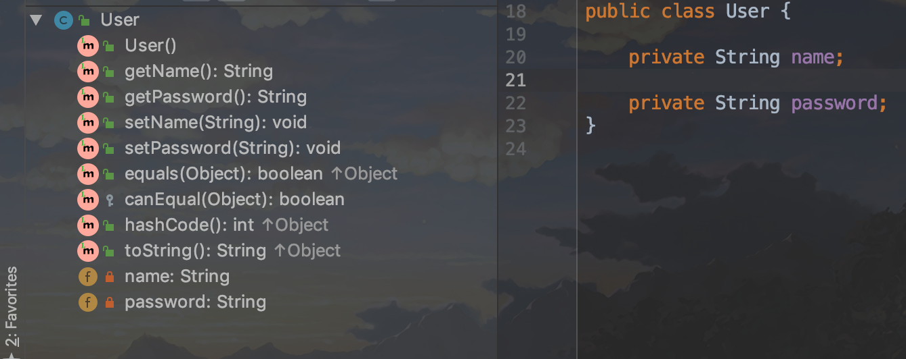

1.2.1. springboot集成lombok插件
什么是lombok?(项目地址:https://github.com/heng1234/springboot2.x)
Lombok项目是一个Java库，它会自动插入编辑器和构建工具中，Lombok提供了一组有用的注释，用来消除Java类中的大量样板代码。仅五个字符(@Data)就可以替换数百行代码从而产生干净，简洁且易于维护的Java类。
Lombok也存在一定风险，在一些开发工具商店中没有Project Lombok支持选择。 IDE和JDK升级存在破裂的风险，并且围绕项目的目标和实施存在争议。
常用注解：
@Setter ：注解在类或字段，注解在类时为所有字段生成setter方法，注解在字段上时只为该字段生成setter方法。
@Getter ：使用方法同上，区别在于生成的是getter方法。
@ToString ：注解在类，添加toString方法。
@EqualsAndHashCode： 注解在类，生成hashCode和equals方法。
@NoArgsConstructor： 注解在类，生成无参的构造方法。
@RequiredArgsConstructor： 注解在类，为类中需要特殊处理的字段生成构造方法，比如final和被@NonNull注解的字段。
@AllArgsConstructor： 注解在类，生成包含类中所有字段的构造方法。
@Data： 注解在类，生成setter/getter、equals、canEqual、hashCode、toString方法，如为final属性，则不会为该属性生成setter方法。
@Slf4j： 注解在类，生成log变量，严格意义来说是常量。
简单来说就是减少了代码量 如实体类getter setter toString 等方法的编写
首先在idea安装lombok插件 不会的自行搜索idea安装lombok插件
接着在springboot项目pom文件加入 lombok插件
<!--lombok插件-->
<dependency>
<groupId>org.projectlombok</groupId>
<artifactId>lombok</artifactId>
<version>1.18.10</version>
<optional>true</optional>
</dependency>
接着编写实体类加上@Date注解
package com.boot.boot_resoure.entity;
import lombok.Data;
/**
* @author : kaifa
* create at: 2019-10-16 16:57
* @description: springboot2.x集成lombok
* 不需要写get set方法插件会为我们自动生成减少了代码量 需要在idea安装lombok插件
* @Date包含
* @Getter
* @Setter
* @ToString
* @EqualsAndHashCode
* 这些注解
*/
@Data
public class User {
private String name;
private String password;
}
此时看idea显示

方法自动生成了
接着编写测试controller
package com.boot.boot_resoure.controller;
import com.boot.boot_resoure.entity.User;
import org.springframework.web.bind.annotation.GetMapping;
import org.springframework.web.bind.annotation.RequestMapping;
import org.springframework.web.bind.annotation.RestController;
/**
* @author : kaifa
* create at: 2019-10-16 17:02
* @description: lombok测试
*/
@RestController
@RequestMapping("lombok")
public class LombokController {
/**
* 测试lombok方法
* @return
*/
@GetMapping("/testLombok.html")
public String testLombok(){
//实体类没有写setter getter方法 还有toString方法
//都是lombok自动为我们创建的
User user = new User();
user.setName("name");
user.setPassword("123456");
return "lombok:---"+user.toString();
}
}
启动项目访问 这里我把端口改为7001了因为端口冲突问题
http://localhost:7001/lombok/testLombok.html
得出结果:

项目地址:https://github.com/heng1234/springboot2.x